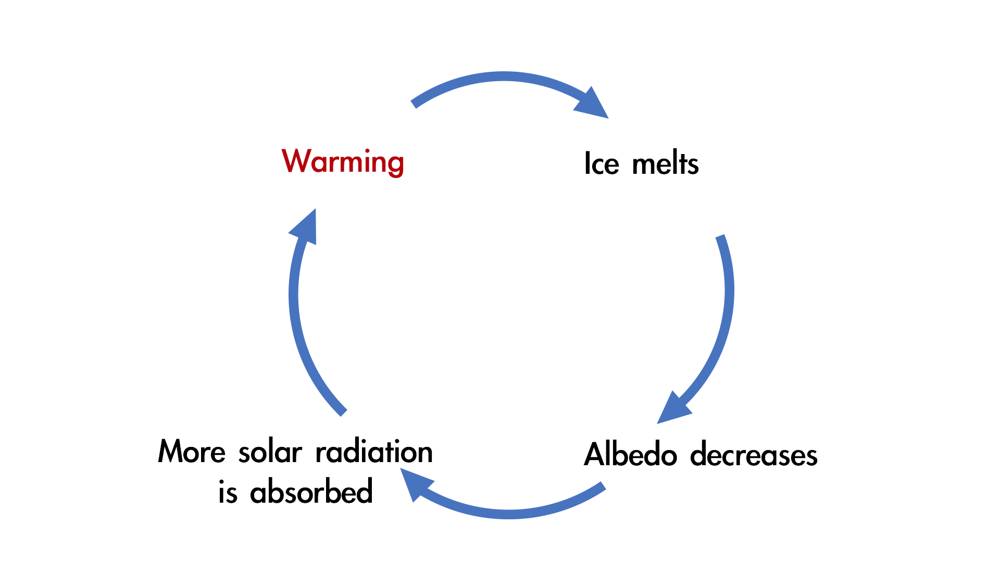

Feedback Loop
Rising global temperatures cause glaciers to melt faster, initially boosting freshwater supplies. However, ongoing retreat reduces long-term water availability, leading to droughts in regions like the Himalayas and Andes. This creates a feedback loop, worsening climate change impacts.

Scientific Evidence Supporting the Loop:
Temperature Rise and Glacier Retreat: Studies have shown that rising global temperatures correlate strongly with accelerated glacier retreat. According to the IPCC, the average global temperature has increased by about 1.1°C since the late 19th century, contributing significantly to the melting of glaciers worldwide.
Source: IPCC Sixth Assessment Report
Impact on Freshwater Availability: Research indicates that many major rivers fed by glaciers, such as the Ganges, the Yangtze, and the Colorado River, are experiencing changes in flow patterns due to reduced glacial input. These changes are impacting agriculture, hydropower, and drinking water supplies.
Source: National Snow and Ice Data Center (NSIDC)
Albedo Effect and Local Temperature Increase: The loss of ice surfaces reduces the Earth's albedo, leading to higher absorption of solar radiation and further warming. This effect is particularly noticeable in the Arctic, where the loss of sea ice has been linked to accelerated regional warming.
Source: NASA Earth Observatory
Evaporation and Drought Intensification: Increased temperatures and reduced water levels in rivers and lakes enhance evaporation rates, contributing to more severe and prolonged droughts. This phenomenon has been observed in several regions, including the western United States and parts of Central Asia.
Source: United States Geological Survey (USGS)